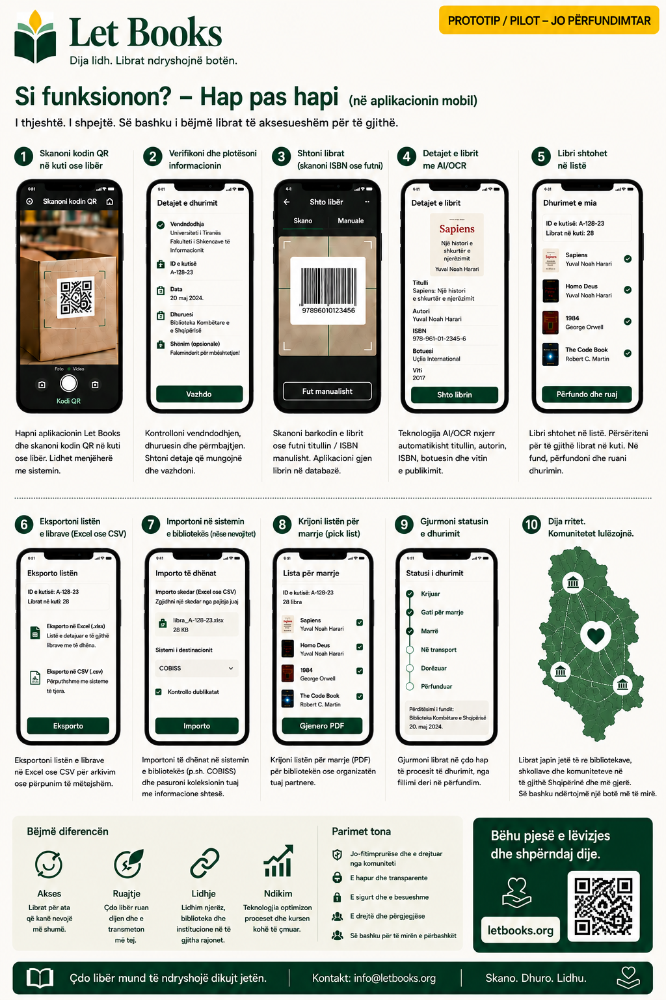

Teksti dhe rrjedhat e punës në këtë faqe përshkruajnë drejtimin e projektit, jo një zbatim përfundimtar prodhimi.
Udhëzues për individë
Katalogoni kutinë e parë pa e kthyer gjithçka në një projekt të madh.
Kjo faqe është për dhurues privatë, familje, vullnetarë dhe organizata të vogla që duan të ruajnë libra seriozë dhe më pas t'i ofrojnë dhe t'i gjejnë më lehtë.

Kur ky udhëzues është për ju
- Keni libra në shtëpi, depo ose zyrë.
- Doni të dini çfarë ka në çdo kuti para se të ofroni diçka.
- Ju duhet një rrjedhë pune mobile me më pak shtypje.
- Më vonë mund të dhuroni në një ose më shumë biblioteka.
Si duket suksesi
- Skanoni kutinë dhe shihni përmbajtjen e saj.
- Shtoni një libër të ri për pak sekonda.
- Eksportoni një listë të pastër për shqyrtim.
- Rigjeni kopjet e kërkuara kur të vijë koha për t'i marrë.
Rrjedha e shpejtë e punës
Kalimi i parë duhet të jetë mjaftueshëm i shpejtë për rafte dhe kuti reale.
Skano kutitë me QR
Hap kontekstin e saktë të vendndodhjes para futjes së të dhënave.
Fotografo kopertinën
Kopertina mbetet orientimi kryesor vizual për shfletim.
Skano ose shkruaj ISBN
Nëse duket, përdore. Nëse jo, ruaje dhe pasuroje më vonë.
Ruaj dhe vazhdo
Futja e shpejtë nuk duhet të kërkojë bibliografi të plotë para librit tjetër.
Eksporto për shqyrtim
Përgatit një seri për bibliotekën ose partnerin.
Krijo listë marrjeje
Librat e kërkuar grupohen sipas dhomës, raftit dhe kutisë.
Çfarë është më e rëndësishme të shënohet
Titulli, autori, viti kur duket, gjendja e kopjes dhe vendndodhja e saktë. Këto janë të dhënat që e bëjnë dhurimin të zbatueshëm më vonë.
AI si ndihmës, jo autoritet
Nëse OCR ose sugjerimet e metadatave aktivizohen më vonë, trajtojini si sugjerime që kërkojnë verifikim njerëzor.
Shembull: Një familje trashëgon bibliotekën teknike të një profesori, i etiketon kutitë, fotografon kopertinat, eksporton një seri për shqyrtim dhe më vonë gjen saktësisht ato kopje që kërkon biblioteka.